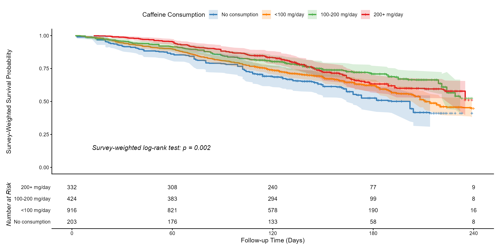
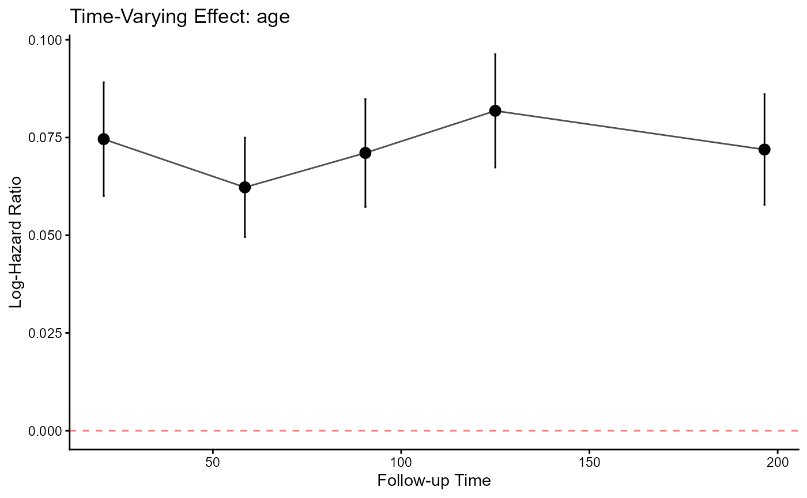
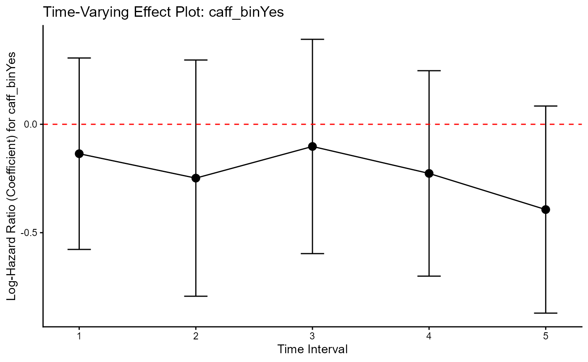

Survival Analysis with svyTable1
Source:vignettes/v4-survival-analysis.Rmd
v4-survival-analysis.Rmd
knitr::opts_chunk$set(
collapse = TRUE,
comment = "#>"
)This vignette introduces survival analysis tools in the svyTable1 package for complex survey data. The functions support Kaplan–Meier estimation, proportional hazards diagnostics, and multiple imputation pipelines.
The vignette covers three tasks:
- Visualizing survival curves with
svykmplot() - Testing the proportional hazards assumption with an ad-hoc procedure
svycoxph_CE() - Extending proportional hazards diagnostics to multiply imputed data
with
svycoxph_CE_mi()
1. Visualizing Survey-Weighted Survival Data
(svykmplot)
library(svyTable1)
library(survey)
library(knitr)
library(survival)
library(ggplot2)
library(dplyr)
library(mitools)
library(mice)svykmplot() produces Kaplan–Meier survival estimates
that correctly incorporate survey weights, strata, and clusters. The
function returns both a plot and a number-at-risk table. The plot
supports automatic or custom colors, p-value display, and censoring
indicators.
The example below uses the NHANES linked mortality file to compare survival across levels of caffeine consumption among women.
The number-at-risk table is printed beneath the plot, which is required by common reporting guidelines.
data(nhanes_mortality)
analytic_design <- svydesign(
strata = ~strata,
id = ~psu,
weights = ~survey_weight,
data = nhanes_mortality,
nest = TRUE
)
design_female <- subset(analytic_design, sex == "Female")
km_formula <- Surv(stime, status) ~ caff
distinct_palette <- c("#377EB8", "#FF7F00", "#4DAF4A", "#E41A1C")
km_results_female <- svykmplot(
formula = km_formula,
design = design_female,
legend_title = "Caffeine Consumption",
time_unit = "days",
time_breaks = seq(0, 240, by = 60),
palette = distinct_palette,
show_pval = TRUE,
show_censor_marks = TRUE
)
km_results_female$plot
#> Warning: Removed 1 row containing missing values or values outside the scale range
#> (`geom_step()`).
#> Warning: Removed 1 row containing missing values or values outside the scale range
#> (`geom_ribbon()`).
#> Warning: Removed 38 rows containing missing values or values outside the scale range
#> (`geom_point()`).
knitr::kable(
km_results_female$table,
caption = "Number at Risk for Female Mortality Plot"
)2. Ad hoc solutions for testing Proportional Hazards
The R functions, svycoxph_CE (for single survey designs) and svycoxph_CE_mi (for multiply imputed survey designs), are ad hoc solutions for testing the Proportional Hazards (PH) assumption in a complex survey data analysis environment.
What the Functions Do
Both functions implement the same core strategy for assessing the PH assumption, which is violated if the effect of a covariate changes over time (i.e., ). They transform the proportional hazards model (second equation below) into a time-dependent coefficient model using a step-function approach.
The fundamental Cox models are:
Proportional Hazards (PH):
Time-Dependent Coefficient:
The step-function approach works by:
Defining Time Intervals:
The total follow-up time is split into distinct intervals (for example, 5 quantiles of event times).Splitting the Data:
The input dataset is expanded into a start-stop format usingsurvival::survSplit(). A single subject’s follow-up is broken into multiple rows, one for each time interval they contribute to.Fitting Interval-Specific Models:
A separate Cox model is fitted for each time interval. This is achieved by including a term such asvar_to_test:strata(tgroup)
or by subsetting the data by the interval variable (tgroup) and usingSurv(tstart, time, status) ~ ...in the model formula.Multiple Imputation Support:
Forsvycoxph_CE_mi, each interval model is pooled across the multiple imputations usingmitools::pool().Extracting and Plotting Coefficients:
The functions extract the coefficient () and its standard error for the variable being tested across intervals, then plot them against time.
Interpretation
If the true effect is constant (PH holds), the plotted coefficients
should cluster around the overall constant-effect estimate, with
confidence intervals overlapping the overall mean or null-effect
line.
A clear time trend in the step-function coefficients suggests a PH
violation.
Why These are Ad Hoc Solutions, and Why the Specialized Functions are Necessary
The svycoxph_CE and svycoxph_CE.mi
functions are “ad hoc” solutions; and they are purpose-built to solve a
gap in R’s survival analysis ecosystem. Standard methods for testing the
proportional hazards assumption fail when faced with the combined
complexity of survey design, multiple imputation, and
time-varying coefficients.
This function is the correct solution because it successfully navigates three distinct incompatibilities in standard packages:
- Incompatibility of
cox.zph()andsvycoxph
The standard function cox.zph() (based on Schoenfeld
residuals) cannot be used on svycoxph objects. Using it on
a non-survey coxph model, even with a
weights() term, ignores the clusters and strata, leading to
incorrect standard errors and invalid p-values.
-
Potential Solution: The
svycoxph_CEfunctions usesvycoxphfor every calculation, ensuring that the survey design’s variance estimation is correctly applied at all steps.
- Incompatibility of
tt()andsvycoxph
The “correct” way to model a continuously time-varying
coefficient (e.g.,
)
in a coxph model is to use the tt()
(time-transform) argument.
-
The Problem: The
tt()argument is not implemented in thesurvey::svycoxphfunction. A researcher using survey data is therefore technically blocked from using this method. -
Potential Solution: The step-function approach is
the most robust, non-parametric alternative. By fitting separate models
in discrete time intervals, it makes no assumptions about the
shape of the effect over time and is fully compatible with
svycoxph.
- Incompatibility of
cox.zph()and Multiple Imputation
Standard diagnostics like cox.zph() are not designed to
be “pooled” across multiply-imputed datasets. A researcher might
incorrectly run the test on just one imputed dataset or, worse, on the
stacked (long-format) data, both of which are invalid.
-
Potential Solution: The
svycoxph_CE.mifunction correctly handles multiple imputation by fitting the step-function model separately to each imputed dataset and then pooling the results using Rubin’s Rules (mitools::pool()). This produces a single, valid estimate and confidence interval for the coefficient in each time interval.
- Avoiding the “Obvious but Incorrect”
log(t)Trap
It is a common mistake (Therneau, Crowson, and Atkinson
2017) to test the PH assumption by adding a simple
interaction like covariate:log(time) to the formula.
- The Problem: This is statistically invalid, as it introduces circular logic. It uses the subject’s final follow-up time (part of the outcome) as a predictor for the hazard at all earlier time points .
-
Potential Solution: The
survSplitmethod avoids this by partitioning the data into(start, stop]intervals. The model at any given intervaltonly uses data from subjects still at risk, correctly adhering to the principles of survival analysis.
Complete case (svycoxph_CE)
data(nhanes_mortality)
analytic_design <- svydesign(
strata = ~strata,
id = ~psu,
weights = ~survey_weight,
data = nhanes_mortality,
nest = TRUE
)
data_full_clean <- analytic_design$variables %>%
dplyr::filter(stime > 0) %>%
mutate(
caff_bin = factor(
ifelse(caff == "No consumption", "No", "Yes"),
levels = c("No", "Yes")
)
)
analytic_design_final <- svydesign(
strata = ~strata,
id = ~psu,
weights = ~survey_weight,
data = data_full_clean,
nest = TRUE
)
my_formula <- "caff_bin + age"
my_var <- "age"
svycoxph_CE(
formula_rhs = my_formula,
design = analytic_design_final,
var_to_test = my_var,
time_var = "stime",
status_var = "status",
n_intervals = 5,
verbose = TRUE,
print_main_model = TRUE,
print_split_summary = TRUE
)
#> [1] "--- Fitting Main (Constant Effect) Model ---"
#> Stratified 1 - level Cluster Sampling design (with replacement)
#> With (180) clusters.
#> svydesign(strata = ~strata, id = ~psu, weights = ~survey_weight,
#> data = data_full_clean, nest = TRUE)
#>
#>
#> |Variable | HR| CI.Lower| CI.Upper| p.value|
#> |:-----------|-----:|--------:|--------:|-------:|
#> |caff_binYes | 0.764| 0.622| 0.938| 0.01|
#> |age | 1.075| 1.067| 1.082| 0.00|
#>
#> [1] "--- Cut points used ---"
#> 20% 40% 60% 80%
#> 42 75 106 144
#> [1] "--- Using Automatic Design Extraction ---"
#> Stratified 1 - level Cluster Sampling design (with replacement)
#> With (180) clusters.
#> subset(split_design, split_design$variables$tgroup == i)
#> Stratified 1 - level Cluster Sampling design (with replacement)
#> With (180) clusters.
#> subset(split_design, split_design$variables$tgroup == i)
#> Stratified 1 - level Cluster Sampling design (with replacement)
#> With (180) clusters.
#> subset(split_design, split_design$variables$tgroup == i)
#> Stratified 1 - level Cluster Sampling design (with replacement)
#> With (180) clusters.
#> subset(split_design, split_design$variables$tgroup == i)
#> Stratified 1 - level Cluster Sampling design (with replacement)
#> With (139) clusters.
#> subset(split_design, split_design$variables$tgroup == i)
#> [1] "--- Summary of Time-Interval Models ---"
#>
#>
#> |Time.Interval |Variable | HR| CI.Lower| CI.Upper| p.value|
#> |:-------------|:-----------|-----:|--------:|--------:|-------:|
#> |0-42 |caff_binYes | 0.625| 0.433| 0.903| 0.012|
#> |0-42 |age | 1.077| 1.062| 1.093| 0.000|
#> |42-75 |caff_binYes | 0.768| 0.459| 1.284| 0.314|
#> |42-75 |age | 1.064| 1.051| 1.078| 0.000|
#> |75-106 |caff_binYes | 0.911| 0.569| 1.461| 0.700|
#> |75-106 |age | 1.074| 1.059| 1.089| 0.000|
#> |106-144 |caff_binYes | 0.832| 0.507| 1.365| 0.467|
#> |106-144 |age | 1.085| 1.070| 1.101| 0.000|
#> |144-249 |caff_binYes | 0.735| 0.462| 1.170| 0.195|
#> |144-249 |age | 1.075| 1.059| 1.090| 0.000|
- Multiple Imputation Case (
svycoxph_CE_mi)
data(nhanes_mortality)
analytic_design <- svydesign(
strata = ~strata,
id = ~psu,
weights = ~survey_weight,
data = nhanes_mortality,
nest = TRUE
)
set.seed(123)
data_with_miss <- analytic_design$variables %>%
dplyr::filter(stime > 0) %>%
mutate(
caff_bin = factor(
ifelse(caff == "No consumption", "No", "Yes"),
levels = c("No", "Yes")
),
age = ifelse(runif(n()) < 0.10, NA, age),
bmi_cat = factor(ifelse(age > 50 & runif(n()) < 0.15, NA, as.character(bmi.cat)))
)
print(mice::md.pattern(data_with_miss[, c("age", "bmi_cat", "caff_bin", "stime", "status")], plot = FALSE))
#> caff_bin stime status age bmi_cat
#> 2994 1 1 1 1 1 0
#> 401 1 1 1 1 0 1
#> 343 1 1 1 0 1 1
#> 42 1 1 1 0 0 2
#> 0 0 0 385 443 828
data_with_miss$nelson_aalen <- nelsonaalen(
data_with_miss,
time = stime,
status = status
)
M_IMPUTATIONS <- 2
MAX_ITERATIONS <- 2
pred_matrix <- make.predictorMatrix(data_with_miss)
vars_to_keep_as_is <- c("id", "survey.weight", "psu", "strata",
"stime", "status", "nelson_aalen", "caff_bin", "sex")
pred_matrix[, vars_to_keep_as_is] <- 0
pred_matrix[vars_to_keep_as_is, ] <- 0
imputed_data <- mice(
data_with_miss,
m = M_IMPUTATIONS,
maxit = MAX_ITERATIONS,
predictorMatrix = pred_matrix,
method = "pmm",
seed = 123,
printFlag = FALSE
)
#> Warning: Number of logged events: 4
impdata_long <- mice::complete(imputed_data, "long", include = FALSE)
allImputations_main <- imputationList(split(impdata_long, impdata_long$.imp))
design_main <- svydesign(
strata = ~strata,
id = ~psu,
weights = ~survey_weight,
data = allImputations_main,
nest = TRUE
)
my_formula <- "caff_bin + sex + age + bmi_cat"
main_formula <- as.formula(paste0("Surv(stime, status) ~ ", my_formula))
main_fit_list <- with(design_main, svycoxph(main_formula))
main_fit_pooled <- pool(main_fit_list)
#> Stratified 1 - level Cluster Sampling design (with replacement)
#> With (180) clusters.
#> svydesign(ids = ids, probs = probs, strata = strata, variables = variables,
#> fpc = fpc, nest = nest, check.strata = check.strata, weights = weights,
#> data = d, pps = pps, calibrate.formula = calibrate.formula,
#> ...)
#> Stratified 1 - level Cluster Sampling design (with replacement)
#> With (180) clusters.
#> svydesign(ids = ids, probs = probs, strata = strata, variables = variables,
#> fpc = fpc, nest = nest, check.strata = check.strata, weights = weights,
#> data = d, pps = pps, calibrate.formula = calibrate.formula,
#> ...)
#> Stratified 1 - level Cluster Sampling design (with replacement)
#> With (180) clusters.
#> svydesign(ids = ids, probs = probs, strata = strata, variables = variables,
#> fpc = fpc, nest = nest, check.strata = check.strata, weights = weights,
#> data = d, pps = pps, calibrate.formula = calibrate.formula,
#> ...)
event_times <- data_with_miss$stime[data_with_miss$status == 1]
cuts <- quantile(event_times, probs = c(0.2, 0.4, 0.6, 0.8), na.rm = TRUE)
impdata_long_split <- survSplit(Surv(stime, status) ~ .,
data = impdata_long,
cut = cuts,
episode = "tgroup",
id = "split_id")
allImputations_split <- imputationList(split(impdata_long_split, impdata_long_split$.imp))
design_split <- svydesign(
strata = ~strata,
id = ~psu,
weights = ~survey_weight,
data = allImputations_split,
nest = TRUE
)
my_ph_plot <- svycoxph_CE_mi(
formula_rhs = my_formula,
design_split = design_split,
var_to_test = "caff_binYes",
tgroup_var = "tgroup",
time_var = "stime",
status_var = "status",
main_model_fit = main_fit_pooled,
print_split_summary = TRUE,
show_null_effect = TRUE
)
#> [1] "--- Tidy Table for Final Paper (if Constant Effect Assumption is Met) ---"
#>
#>
#> |Variable | HR| CI.Lower| CI.Upper| p.value|
#> |:--------------------|-----:|--------:|--------:|-------:|
#> |caff_binYes | 0.797| -0.445| -0.010| 0.041|
#> |sexFemale | 0.701| -0.511| -0.199| 0.000|
#> |age | 1.071| 0.061| 0.076| 0.000|
#> |bmi_cat20.0 to <25.0 | 0.342| -1.613| -0.534| 0.000|
#> |bmi_cat25.0 to <30.0 | 0.287| -1.796| -0.699| 0.000|
#> |bmi_cat30.0 to <35.0 | 0.265| -1.909| -0.747| 0.000|
#> |bmi_cat35.0 to <40.0 | 0.304| -1.819| -0.564| 0.000|
#> |bmi_cat40.0+ | 0.352| -1.625| -0.461| 0.000|
#>
#>
#> [1] "--- Running Constant Effect Check: Using 5 intervals ---"
#> Stratified 1 - level Cluster Sampling design (with replacement)
#> With (180) clusters.
#> svydesign(ids = ids, probs = probs, strata = strata, variables = variables,
#> fpc = fpc, nest = nest, check.strata = check.strata, weights = weights,
#> data = d, pps = pps, calibrate.formula = calibrate.formula,
#> ...)
#> Stratified 1 - level Cluster Sampling design (with replacement)
#> With (180) clusters.
#> svydesign(ids = ids, probs = probs, strata = strata, variables = variables,
#> fpc = fpc, nest = nest, check.strata = check.strata, weights = weights,
#> data = d, pps = pps, calibrate.formula = calibrate.formula,
#> ...)
#> Stratified 1 - level Cluster Sampling design (with replacement)
#> With (180) clusters.
#> svydesign(ids = ids, probs = probs, strata = strata, variables = variables,
#> fpc = fpc, nest = nest, check.strata = check.strata, weights = weights,
#> data = d, pps = pps, calibrate.formula = calibrate.formula,
#> ...)
#> Stratified 1 - level Cluster Sampling design (with replacement)
#> With (180) clusters.
#> svydesign(ids = ids, probs = probs, strata = strata, variables = variables,
#> fpc = fpc, nest = nest, check.strata = check.strata, weights = weights,
#> data = d, pps = pps, calibrate.formula = calibrate.formula,
#> ...)
#> Stratified 1 - level Cluster Sampling design (with replacement)
#> With (180) clusters.
#> svydesign(ids = ids, probs = probs, strata = strata, variables = variables,
#> fpc = fpc, nest = nest, check.strata = check.strata, weights = weights,
#> data = d, pps = pps, calibrate.formula = calibrate.formula,
#> ...)
#> Stratified 1 - level Cluster Sampling design (with replacement)
#> With (180) clusters.
#> svydesign(ids = ids, probs = probs, strata = strata, variables = variables,
#> fpc = fpc, nest = nest, check.strata = check.strata, weights = weights,
#> data = d, pps = pps, calibrate.formula = calibrate.formula,
#> ...)
#> Stratified 1 - level Cluster Sampling design (with replacement)
#> With (180) clusters.
#> svydesign(ids = ids, probs = probs, strata = strata, variables = variables,
#> fpc = fpc, nest = nest, check.strata = check.strata, weights = weights,
#> data = d, pps = pps, calibrate.formula = calibrate.formula,
#> ...)
#> Stratified 1 - level Cluster Sampling design (with replacement)
#> With (180) clusters.
#> svydesign(ids = ids, probs = probs, strata = strata, variables = variables,
#> fpc = fpc, nest = nest, check.strata = check.strata, weights = weights,
#> data = d, pps = pps, calibrate.formula = calibrate.formula,
#> ...)
#> Stratified 1 - level Cluster Sampling design (with replacement)
#> With (180) clusters.
#> svydesign(ids = ids, probs = probs, strata = strata, variables = variables,
#> fpc = fpc, nest = nest, check.strata = check.strata, weights = weights,
#> data = d, pps = pps, calibrate.formula = calibrate.formula,
#> ...)
#> Stratified 1 - level Cluster Sampling design (with replacement)
#> With (180) clusters.
#> svydesign(ids = ids, probs = probs, strata = strata, variables = variables,
#> fpc = fpc, nest = nest, check.strata = check.strata, weights = weights,
#> data = d, pps = pps, calibrate.formula = calibrate.formula,
#> ...)
#> Stratified 1 - level Cluster Sampling design (with replacement)
#> With (180) clusters.
#> svydesign(ids = ids, probs = probs, strata = strata, variables = variables,
#> fpc = fpc, nest = nest, check.strata = check.strata, weights = weights,
#> data = d, pps = pps, calibrate.formula = calibrate.formula,
#> ...)
#> Stratified 1 - level Cluster Sampling design (with replacement)
#> With (180) clusters.
#> svydesign(ids = ids, probs = probs, strata = strata, variables = variables,
#> fpc = fpc, nest = nest, check.strata = check.strata, weights = weights,
#> data = d, pps = pps, calibrate.formula = calibrate.formula,
#> ...)
#> Stratified 1 - level Cluster Sampling design (with replacement)
#> With (139) clusters.
#> svydesign(ids = ids, probs = probs, strata = strata, variables = variables,
#> fpc = fpc, nest = nest, check.strata = check.strata, weights = weights,
#> data = d, pps = pps, calibrate.formula = calibrate.formula,
#> ...)
#> Stratified 1 - level Cluster Sampling design (with replacement)
#> With (139) clusters.
#> svydesign(ids = ids, probs = probs, strata = strata, variables = variables,
#> fpc = fpc, nest = nest, check.strata = check.strata, weights = weights,
#> data = d, pps = pps, calibrate.formula = calibrate.formula,
#> ...)
#> Stratified 1 - level Cluster Sampling design (with replacement)
#> With (139) clusters.
#> svydesign(ids = ids, probs = probs, strata = strata, variables = variables,
#> fpc = fpc, nest = nest, check.strata = check.strata, weights = weights,
#> data = d, pps = pps, calibrate.formula = calibrate.formula,
#> ...)
#> [1] "--- Tidy Summary of All Time-Interval Models (if Constant Effect is Violated) ---"
#>
#>
#> |Time.Interval |Variable | HR| CI.Lower| CI.Upper| p.value|
#> |:-------------|:--------------------|-----:|--------:|--------:|-------:|
#> |0-42 units |caff_binYes | 0.873| -0.579| 0.308| 0.547|
#> |0-42 units |sexFemale | 0.722| -0.628| -0.025| 0.034|
#> |0-42 units |age | 1.070| 0.051| 0.084| 0.000|
#> |0-42 units |bmi_cat20.0 to <25.0 | 0.331| -2.288| 0.080| 0.067|
#> |0-42 units |bmi_cat25.0 to <30.0 | 0.190| -2.789| -0.531| 0.004|
#> |0-42 units |bmi_cat30.0 to <35.0 | 0.205| -2.771| -0.401| 0.009|
#> |0-42 units |bmi_cat35.0 to <40.0 | 0.276| -2.451| -0.123| 0.030|
#> |0-42 units |bmi_cat40.0+ | 0.250| -2.537| -0.233| 0.019|
#> |42-75 units |caff_binYes | 0.780| -0.796| 0.299| 0.372|
#> |42-75 units |sexFemale | 0.627| -0.785| -0.148| 0.004|
#> |42-75 units |age | 1.066| 0.050| 0.077| 0.000|
#> |42-75 units |bmi_cat20.0 to <25.0 | 0.217| -2.380| -0.676| 0.000|
#> |42-75 units |bmi_cat25.0 to <30.0 | 0.190| -2.423| -0.903| 0.000|
#> |42-75 units |bmi_cat30.0 to <35.0 | 0.181| -2.527| -0.893| 0.000|
#> |42-75 units |bmi_cat35.0 to <40.0 | 0.153| -2.756| -0.997| 0.000|
#> |42-75 units |bmi_cat40.0+ | 0.314| -2.063| -0.253| 0.012|
#> |75-106 units |caff_binYes | 0.903| -0.599| 0.394| 0.685|
#> |75-106 units |sexFemale | 0.811| -0.510| 0.089| 0.168|
#> |75-106 units |age | 1.072| 0.053| 0.087| 0.000|
#> |75-106 units |bmi_cat20.0 to <25.0 | 3.166| -0.959| 3.264| 0.284|
#> |75-106 units |bmi_cat25.0 to <30.0 | 4.401| -0.564| 3.528| 0.155|
#> |75-106 units |bmi_cat30.0 to <35.0 | 3.574| -0.852| 3.400| 0.239|
#> |75-106 units |bmi_cat35.0 to <40.0 | 4.203| -0.642| 3.514| 0.175|
#> |75-106 units |bmi_cat40.0+ | 5.280| -0.373| 3.701| 0.109|
#> |106-144 units |caff_binYes | 0.797| -0.703| 0.249| 0.349|
#> |106-144 units |sexFemale | 0.572| -0.890| -0.227| 0.001|
#> |106-144 units |age | 1.080| 0.062| 0.091| 0.000|
#> |106-144 units |bmi_cat20.0 to <25.0 | 0.331| -2.382| 0.171| 0.089|
#> |106-144 units |bmi_cat25.0 to <30.0 | 0.255| -2.602| -0.133| 0.030|
#> |106-144 units |bmi_cat30.0 to <35.0 | 0.231| -2.768| -0.164| 0.027|
#> |106-144 units |bmi_cat35.0 to <40.0 | 0.335| -2.402| 0.212| 0.100|
#> |106-144 units |bmi_cat40.0+ | 0.172| -2.868| -0.649| 0.002|
#> |144-249 units |caff_binYes | 0.675| -0.873| 0.086| 0.108|
#> |144-249 units |sexFemale | 0.801| -0.504| 0.060| 0.122|
#> |144-249 units |age | 1.070| 0.052| 0.083| 0.000|
#> |144-249 units |bmi_cat20.0 to <25.0 | 0.391| -2.446| 0.570| 0.222|
#> |144-249 units |bmi_cat25.0 to <30.0 | 0.309| -2.685| 0.339| 0.128|
#> |144-249 units |bmi_cat30.0 to <35.0 | 0.284| -2.649| 0.130| 0.075|
#> |144-249 units |bmi_cat35.0 to <40.0 | 0.270| -2.856| 0.240| 0.097|
#> |144-249 units |bmi_cat40.0+ | 0.384| -2.464| 0.552| 0.213|
#>
#>
#> [1] "--- Estimated Coefficients over Time (for Plot) ---"
#>
#>
#> | tgroup| coef| se| time| ci_low| ci_high|
#> |------:|------:|-----:|----:|------:|-------:|
#> | 1| -0.136| 0.225| 1| -0.577| 0.306|
#> | 2| -0.248| 0.278| 2| -0.793| 0.297|
#> | 3| -0.102| 0.252| 3| -0.597| 0.392|
#> | 4| -0.227| 0.242| 4| -0.700| 0.247|
#> | 5| -0.393| 0.244| 5| -0.871| 0.084|
print(my_ph_plot)
How to Interpret the Results
The output has three key parts: the “Main Model” table, the “Time-Interval” table, and the plot.
Main (Constant Effect) Model: This is the standard, un-split model. It assumes the effect of asthma is constant over time.
Time-Interval Model & Plot: This is the diagnostic test. We check this plot to see if the assumption of the first model was valid.
The plot shows the pooled log-Hazard Ratio (coefficient) for variable of intest across the 5 time intervals. While they are not perfectly flat, the vertical 95% confidence intervals substantially overlap with each other. You could conclude that the constant effect (parallel to proportional hazards) assumption is reasonable. Hence, instead of the time-split model (in the 2nd output), just report the Main (Constant Effect) Model (in the first output).